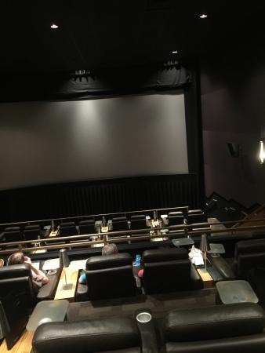

The Watcher theater is a new and growing movie theatre founded by a group of young enterpernuers eager to show people of a small nation the beauty of the cinematic universe. Created by Geek Inc, corparation. The Watcher Theater provides cinematic entertainment to the general public, showcasing blockbuster movies on a large screen.
With only two branches located in the capital city Gaborone and Francistown. The Watcher Theaters was first opened to the public in May 2010.

Theater seats in gaborone

Theater seats in Francistown
MISSION
The Watcher Theater bring you out of this world entertainment and create a home and chilled vibe for moviegoers in the midst of the busy city.
VISION
The Watcher Theaters is a venue to view international movies and national films. The Watcher Theater will give resident directors to showcase their talents.